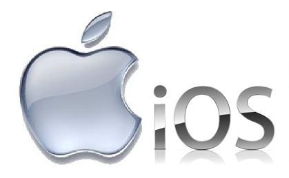

PWA Technology
Progressive Web Apps are experiences that combine
the best of the web and the best of apps.
They are useful to users from the very first
visit in a browser tab, no install required.
As the user progressively builds a relationship
with the app over time, it becomes more and more
powerful. It loads quickly, even on flaky networks,
sends relevant push notifications, has an icon
on the home screen, and loads as a top-level,
full screen experience
Android Technology
Android is a mobile operating system developed by Google, based on the Linux kernel and designed primarily for touchscreen mobile devices such as smartphones and tablets. In addition, Google has further developed Android TV for televisions, Android Auto for cars, and Android Wear for wrist watches, each with a specialized user interface. Variants of Android are also used on game consoles, digital cameras, PCs and other electronics.
Initially developed by Android Inc., which Google bought in 2005, Android was unveiled in 2007, with the first commercial Android device launched in September 2008. The operating system has since gone through multiple major releases, with the current version being 8.1 "Oreo", released in December 2017.
Android has been the best-selling OS worldwide on smartphones since 2011 and on tablets since 2013. As of May 2017, it has two billion monthly active users, it has the largest installed base of any operating system, and as of February 2017, Google Play store features over 2.7 million apps.
IOS technology

IOS is a mobile operating system developed and distributed by Apple Inc. that runs on iPad, iPhone, and iPod touch devices. The operating system manages the device hardware and provides the technologies required to implement native apps. The operating system also ships with various system apps, such as Phone, Mail, and Safari that provide standard system services to the user.The iOS Software Development Kit (SDK) contains the tools and interfaces needed to develop, install, run, and test native apps that appear on an iOS device’s Home screen.
The iOS Software Development Kit (SDK) contains the tools and interfaces needed to develop, install, run, and test native apps that appear on an iOS device’s Home screen. Native apps are built using the iOS system frameworks and Objective-C language and run directly on iOS. Unlike web apps, native apps are installed physically on a device and are therefore always available to the user, even when the device is in Airplane mode.
The iOS SDK provides the resources you need to develop native iOS apps.